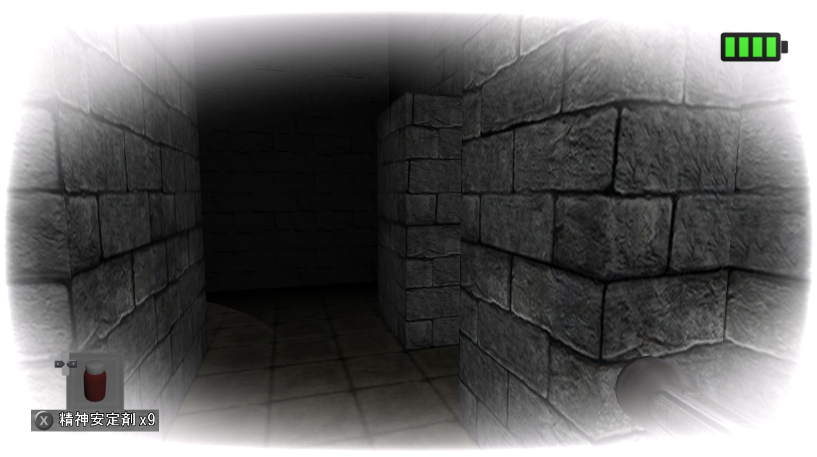

ジャンル : ステルス&ホラー脱出アドベンチャー(1人称視点)
制作人数 : 1人
制作期間 : 5ヵ月
この作品は、不思議な懐中電灯を手に迷宮からの脱出を目指すゲームである。
見知らぬ部屋で目を覚ました主人公は、懐中電灯の明かりを頼りに探索を行う。
そんな中、暗闇から姿を現したのは”恐ろしい化け物”であった。
エンジン : 学内エンジンを改造したエンジン(C++/DirectX12)
プログラム : Visual Studio 2019
3Dモデル : 3ds MAX
エフェクト : Effekseer
画像 : Adobe Photoshop
バージョン管理 : Git Hub https://github.com/XeKosei/myGame
タスク管理 : Redmine
連絡 : Slack
エンジン部分
背景
エネミー
懐中電灯
ゲームシーン
ギミック
アイテム
プレイヤー
TitleScene
fxファイル
改造したソースコード
1: リソースバンクとは、同じファイルパスが呼び出されたときに、事前に読み込んで保存しておいたモデルやマテリアルを利用するというもの。何度も読み込む必要がなくなり、読み込み時間を早くすることができる。
私は、"THE ESCAPE"を手掛ける上で"バイオハザード7(以下バイオ7)"を最も参考にしている。
バイオ7をプレイして私がとても印象に残ったのが、豊かな影の表現であった。
様々な方向から発せられている光に合わせて、方向、大きさ、色の強さがしっかりと反映されて影が映っており、とても感動したことを覚えている。
私が作ろうとしているゲームの肝は懐中電灯であったため、是非とも懐中電灯からのスポットライトで、バイオ7のような影を実現したいと私は考えた。
スポットライト自体は、学校の授業で教わった方法で既に実装済みであった。
この話で重要な仕組みだけを簡単に説明すると、このスポットライトは、位置、色、射出方向、射出角度(射出した光の角度)、影響範囲(光が届く距離)の5つのデータを持っている。
それらのデータを用いて、スポットライトの範囲に入っている頂点のカラーを明るくするという処理を行っているのだ。
しかしそのままでは、遮蔽されているため現実では影になる場所も、明るく照らされることになってしまう。
この問題を解決するために、私はデプスシャドウの技術を応用することにした。
まずスポットライトの為のカメラ(スポットライトカメラ)を用意する。
スポットライトカメラの位置、向き、画角、描画距離を、スポットライトの位置、射出方向、射出角度、影響範囲に合わせる。
ここで注意すべきなのは、画角と射出角度についてである。
カメラの画角は設定した角度の広さになるが、私のスポットライトの場合、実際のスポットライトの角度は、設定した射出角度値の2倍の広さになるのだ。
そうなる理由は、ピクセルシェーダーでのスポットライトの処理が「スポットライトから見たその頂点の位置が、スポットライトの射出方向と比較して射出角度以内に入っているならば明るく照らす」という処理だからだ。
分かりにくいと思うが、下の画像を見ていただけるとイメージしやすいだろう。
画像の水色の部分が角度である。
カメラの画角は、このように設定した角度の値になるのだが、
スポットライトでは、この部分が射出角度として使われているのだ。 つまり、カメラの画角と射出角度を同じ値にしてしまうと、スポットライトの実際の角度は、カメラの画角の2倍になってしまうのだ。さて話が逸れたが、スポットライトとスポットライトカメラのデータを揃えたら、次はスポットライトカメラから見た深度値を得て、深度テクスチャを作る。
この深度テクスチャを使って、ピクセルシェーダーのスポットライトの処理を書き加える。
加える内容は、スポットライトカメラからその頂点への距離と、深度テクスチャからの深度値を比較した結果によって、スポットライトの光を当てるかどうかを決める、という処理。
ここでデプスシャドウとは少し異なる点がある。
デプスシャドウは「遮蔽されている場合、影を落とす」という仕組みなので、その頂点が深度値よりも奥ならば、影を落とすという処理を行うのだ。
しかしこの処理では、深度値より奥にある頂点全てに影を落としてしまうので、本来影が落ちえない筈の場所にも影が落ちてしまう場合があるのだ。
それに対して、このスポットライトの場合は逆に「遮蔽されていない場合、光を当てる」という処理を行っている。
つまり、頂点が深度値より手前のときのみスポットライトの光を当てているのだ。
こうすることで、深度値より奥の場所には光が当たらないため、結果的に影が生じるという仕組みである。
影を作ったのではなく、自然に生じる影なので、デプスシャドウのようにおかしな場所に影が落ちることもない。
このゲームの暗さの表現は、単にゲーム全体の明るさを下げているわけではない。
カメラからの距離が近い場所は明るく、遠い場所ほど暗く見えるという、簡易的な距離フォグを実装している。
処理はカメラから遠い位置ほどカラーを暗くしていくというシンプルなものである。
しかしこれだけで、ゲーム画面自体を見づらくしたりはしないままに、道の先が見通せない暗闇を表現することができるのだ。
・フォグがない場合
・フォグがある場合しかしこのゲームの場合、このままだとフォグの影響によってスポットライトの光がかき消されてしまい、懐中電灯の恩恵が著しく減ってしまうのだ。
そこで、スポットライトの範囲ならば、フォグの影響を受けないという処理を行っている。・処理の例
//懐中電灯から頂点への向きを求める。
float3 toVertexDir = psIn.worldPos - spotLigCameraData.spotLightCameraPos;
toVertexDir = normalize(toVertexDir);
//頂点への向きとスポットライトの向きの内積を計算
float toVertexAngle = dot(toVertexDir, spotLigCameraData.spotLightCameraDir);
//内積の結果をラジアン角度に変換
toVertexAngle = acos(toVertexAngle);
if (toVertexAngle < 0.0f)
{
toVertexAngle *= -1.0f;
}
//スポットライトのアングルを求める。
float spotLigAngle = spotLigCameraData.spotLightCameraAngle;
spotLigAngle *= 0.5f;
//スポットライトのアングルの内側ならば
if (toVertexAngle <= spotLigAngle)
{
//フォグを行わない。
}
このような処理によって、スポットライトの範囲はフォグの影響を受けなくなる。
ゲームを進めると解放される懐中電灯の機能の一つに、透視機能がある。
これは透視を発動している間、シルエット描画によって、エネミーやアイテムを壁越し見ることができるという機能である。
この透視処理においても、深度テクスチャが活躍する。
まずメインカメラから透視したいモデルを描画し、深度テクスチャを作る。
このとき私のゲームの場合は、[距離フォグによる暗闇表現](#距離フォグによる暗闇表現)で説明した計算によって、スポットライトの範囲でのみ深度値を書き込むようにしている。次に、ゲームシーンを描画するとき、その深度テクスチャを使って、描画するピクセルの位置の深度値が0でないとき(つまりそのピクセルの位置に何か透視できるものがあるとき)、シルエットのカラーにするという処理を行う。
(私のゲームの場合は、赤い色が表示されるようにしている)
これによって、スポットライトの光の範囲でこのようなシルエットが浮かび上がる。
このシルエット描画では、赤色を強めに表示しているため、次に紹介する川瀬式ブルームの効果が表れている。
このゲームでは、ポストエフェクトで川瀬式ブルームを行っている。
これは強い光を放っている物体から、その周りのピクセルに光を溢れさせるというポストエフェクトである。
これによって実際の画面の明るさ以上に、強い光を疑似的に表現することができる。
このゲームにおいてこの処理の恩恵を大きく受けているのは、プレイヤーの体力表現である。
このゲームはHPバーを表示しておらず、体力が減ってくると少しづつ画面端に白いスプライトを表示している。
そのスプライトをより強調するために、川瀬式ブルームを活用しているのだ。
川瀬式ブルームの処理には、まずシーンの輝度を抽出して、輝度テクスチャを作る。
次にその輝度テクスチャに、ダウンサンプリングしてから、ブラーを行うという工程を、今回のゲームでは4回行う。
ブラーは、ガウス関数によって周りのテクセルへの影響率を計算して画像をぼかす、ガウシアンブラーを行っている。
ダウンサンプリングは、より解像度の低いレンダリングターゲットにテクスチャを張り付けることである。これによってテクスチャの解像度が低くなるため、処理速度が向上する。
こうして出来上がった4枚のボケ画像を同じ解像度に拡大し、サンプリングする。
4枚の輝度の平均を求めて出力することで、溢れ表現が実現する。

PBR(フィジカルベースドレンダリング)は、近年主流となっているレンダリング方法である。
物理的にほぼ正しいライティングの計算を行うことで、よりリアルなグラフィックを実現することができるのだ。
今回のゲームでは、ウォルト・ディズニーが発表した、Disney Based PBRを実装している。
このPBRは、法線マップに加えて、スムース(滑らかさ)やメタリック(金属度)などのパラメータを用意することでより効果が発揮される。
今回のゲームでは、ほぼすべてのモデルに法線マップとスムースメタリックマップを用意している。
スムースメタリックマップは、rにスムース、gにメタリックの値を保持している。
PBRでは、エネルギー保存の法則とヘルムホルツの相反性の2つの法則を満たす計算が行われている。
ライティングにおけるエネルギー保存の法則は、反射光が入射光より大きくならないという性質である。
ヘルムホルツの相反性は、入射光の向きとその射出方向が入れ替わっても、射出する光の量が変わらないという性質である。
このゲームでは、鏡面反射はクック・トランスモデル、拡散反射はディズニーベースのフレネル反射を考慮した計算を行っている。
石像や石化後のエネミーの描画には、専用のシェーダーを使っている
。
基本的な処理は前述のPBRと同じだが、2つ異なる点がある。
まず1つ目は、albedoColorを石っぽい色合いに統一すること。
//カラーの最大値と最小値を決める。
float maxColor = 0.5f;
float minColor = 0.2f;
//アルベドカラーをサンプリングする。
float4 albedoColor = g_albedo.Sample(g_sampler, psIn.uv);
//サンプリングしたアルベドカラーが最大値を超えていたら、最大値に
//最小値を下回っていたら、最小値にする。
if (albedoColor.x > maxColor)
albedoColor.x = maxColor;
else if (albedoColor.x < minColor);
albedoColor.x = minColor;
if (albedoColor.y > maxColor)
albedoColor.y = maxColor;
else if (albedoColor.y < minColor);
albedoColor.y = minColor;
if (albedoColor.z > maxColor)
albedoColor.z = maxColor;
else if (albedoColor.z < minColor);
albedoColor.z = minColor;
これによって丁度石っぽい色合いになる。
ここで最大値と最小値という幅を持たせることで、単調すぎない色合いを作っている。
もう1つの違いは、スムースとメタリックの値を統一することである。
特にこのエネミーの場合は、肌に赤い血や肉が露わとなっている部分があり、そこはスムースの値がとても大きい。
そのためそのままの値では、石化したときにその部分だけ見え方が異なってしまうからである。
今回のゲームでは、スムースの値は0.5f、メタリックには0.01fとしている。
あとはそれらのパラメータを使ってPBRの計算を行うことで、石像のシェーディングは完了。
このゲームのサウンドは、ほぼ全てAudiostockのフリー音源を利用している。
ただしそのまま音を再生するのではなく、ゲームに合わせた編集を行っている。
まず迷宮という舞台の雰囲気を演出するため、ほぼ全てのサウンドにリバーブをかけ、反響しているようなサウンドにしている。
元々のドアを開ける音
編集後
また、プレイヤーのボタン入力に合わせて鳴るサウンドは、レスポンスを早くしている。
ボタンを押した瞬間に音が鳴ることで、操作を気持ちよく感じてもらえるようにしている。
元々の懐中電灯のスイッチ音(R1ボタン)
編集後。
分かりにくいと思うので、それぞれを0.04倍速にしてみた。
元々の懐中電灯のスイッチ音(R1ボタン) 0.04倍
編集後。 0.04倍
編集後の方は、音がすぐに鳴っていることが分かる。
このような誤差レベルのレスポンスの差でも、実際にボタン入力に当てはめてみると全く操作感が異なってしまうのだ。
また、足音はほぼ常に聞くことになる音なので、様々な音源を聞き比べ、最も気持ちいいものに厳選を行った。
リバーブや倍速処理も行い、出来る限り心地よい音を目指した。
加えて、単調にならないよう複数の足音をランダム再生している。
常に何らかの変化があるというだけで、人間は本能的に楽しい感じるのだ。
・足音
このゲームは、エネミーを上手く避けつつ探索を行い脱出を目指す、ステルス&ホラーのゲームである。
これに加え、ゲームを進めていく中で増えていく懐中電灯の機能よって、その遊び方に変化が生じるような、メリハリのあるゲームにしたいと考えた。
まず始めはまだ懐中電灯に変わった機能はなく、単純にエネミーに見つからないように探索を行わなければならない。
最初に配置されているエネミーはまだ一体だけだが、それでもこのゲームは1人称視点であるため、見つからずに行動するのは難易度が高く、かなり慎重なプレイが要求される。
何故1人称視点では難易度が高いのかと言うと、1人称視点は3人称視点と違い、カメラだけを動かすということができないからである。
3人称視点では基本的に、キャラクターを動かすのはLスティックで、カメラを動かすのはRスティックというのが主流である。カメラの位置はプレイヤーの周囲であるため、本来のプレイヤーの目には見えない筈の場所を見ることも可能なのだ。
しかし1人称視点ではカメラの位置がプレイヤーの目の位置にあるため、カメラとプレイヤーの動きは同期することになる。つまりカメラを動かしたり回転させたりするということは、キャラクターも動かし回転させるということになるのだ。そのため3人称視点よりも自由に見渡すことができず、1人称視点でのステルスゲームは比較的に難易度が高いのだ。
ざっくり言うと、1人称視点は3人称視点より見渡せる範囲が狭いからである。
(逆に言えばその視野の狭さゆえ、一人称視点とホラーゲームはとても相性が良いとも言えるのだが)
そうしてゲームを進めていくと、一つ目の機能である"ストロボフラッシュ"が解放される。
これはバッテリーを一定量消費することで、強いフラッシュを焚くことができる機能である。
このフラッシュを正面からエネミーの顔に当てることで、相手を怯ませることができる。
この機能が加わることで、エネミーに見つかってもある程度はやり過ごしやすくなるので、前より大胆に行動することができるのである。
更にゲームを進めると次のエリアに到達するのだが、そこでは敵が2体徘徊しているため、再び慎重になる必要がある。
あまり"ストロボフラッシュ"に頼りすぎるとすぐにバッテリーが尽きてしまうため、大胆な行動をし過ぎると敵の餌食となってしまうだろう。
しかしこのエリアにある、2つ目の機能が拡張されると、大分楽になるはずだ。ここで解放されるのは透視機能"クレアボヤンス"である。
壁越しでエネミーの位置を把握することができるようになるため、エネミーに見つからないように行動しやすくなるのだ。
そして次のエリアでは、配置されるエネミーが3体となる。
"クレアボヤンス"を駆使してしても尚、難易度の高いステルスプレイとなるので、やはりまたも慎重さが必要となる。
というような構成になっており、定期的に遊び方にメリハリと変化がもたらされることで、ゲームプレイに新鮮さを与え続けているのだ。
ゲームの雰囲気を演出するため、ステージにも様々な工夫を施している。
その例をいくつか紹介。
このゲームは、近年の様々なゲーム作品から影響を受けたシステムや、リスペクトした演出を取り入れている。
本来は実際にこのゲームを触ってもらってそれを見て欲しいのだが、折角なので紹介しようと思う。
まず、スポットライトの影生成の項目でも書いたように、バイオ7からの影響を強く受けている。
ダッシュが前方方向(Lスティックを前に倒しているとき)にしか行えない点や、エネミーに追いつかれたときにカメラが強制的に相手の方を振り向いたりするのは、バイオ7を参考にしている。
次に影響を受けているのは、"THE LAST OF US"(以降ラスアス)である。"THE ESCAPE"の全体的な演出やSEは、ラスアスを意識しているものが多い。
また、懐中電灯の機能の一つである透視能力を実装することに決めたことにも、ラスアスの影響が大きい。
この透視システムについては他にも、"ウィッチャー3 ワイルドハント"や"Marvel's Spider-Man"、"ゴーストオブツシマ"など、似たシステムがあるゲームが増えており、近年の主流なシステムの一つだと感じていたため、実装することに決めた経緯がある。
また、ゲーム進行による遊び方の遷移について述べたが、このようなゲームの進め方は"メトロイドシリーズ"を意識したものである。
探索をしてパワーアップアビリティを入手し、そのアビリティで更に探索を行うというゲームの流れを、懐中電灯の機能の解放という形で実現している。
また、「特定のエリアを徘徊するエネミーがいて、通りたくないけどゲームを進めるためにはそのエリアを何度も通る必要がある」というジレンマのある仕組みは"メトロイドドレッド"を参考にしている。
これらのゲームは全て今まで私がプレイしたことのあるゲームで、細かい部分では私自身も気付いていないところでもっと様々なゲームから影響を受けていると思う。
"THE ESCAPE"はそういった私のゲームの経験や知識を活かして制作された作品なのだ。
私が今回のゲームを作るにあたって、あえて実装しないことに決めた要素がいくつかある。
まず一つがオートカメラである。
これはプレイヤーを動かしたときに、その方向を正面にしようと自動でカメラが動いてくれるシステムである。
これは過去に別のゲームで実装した経験があり、私が本格的な3Dのゲームを作る時に是非取り入れたいと思っていたシステムであった。
しかしFPS視点である今回のゲームには合わなかったため、残念ながら採用するのを諦めた。
次に、平行光源(太陽光)によるシャドウイングである。
これについては、デプスシャドウやVSM(分散シャドウマップ)によるソフトシャドウも完成していた。
しかし今回のゲームは屋内が舞台となり、またスポットライトの影生成もできていたため、名残惜しかったが使用しないこととなった。
あえて、やめることをやめた要素もある。
元々、アイテムにきらりと光るエフェクトを付けて、分かりやすいようにしようと考えていた。
しかし近年の"バイオハザードシリーズ"はリアリティを重視し、あえてそういったエフェクトを付けないという傾向があり、それを知ったため、光るエフェクトは実装はやめることにした。
だが実際に私のゲームを遊んでみると、重要なアイテムを見逃してしまったとき、無意味に広いステージを彷徨うことになってしまう。
そうなると、致命的に楽しくなくなってしまう可能性があるため、やはりエフェクトを付けるべきだと考えて実装を行った。